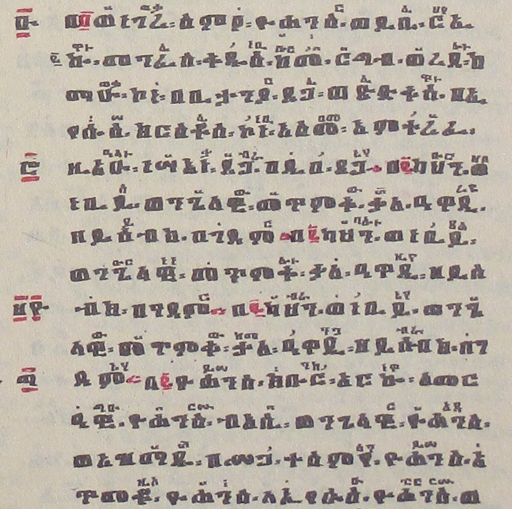

Intended audience: anyone who has heard of Zaima notations and would like to know a little more about it.
What are 'zaima' notations?
Zaima is the name for Ge’ez language chant hymns that are rendered with one or more independent interlinear lines of chant notation. Though different in purpose, Zaima presentation shares much in common with Ruby annotation.
The HTML5 specification provides a way to mark up ruby text, and CSS can be used to fine tune of the positioning of ruby text. To a large extent the support for ruby text can also be applied to layout zaima text.
“Zaima” is an English transcription for the Ge’ez word ዜማ (also transcribed as Zeima and Zema) which is the name given to a tradition of Ethiopian and Eritrean Orthodox Christian hymns sung in chant. Zaima recitation relies on a sophisticated system of chant notation marks similar in principal to other chanting traditions such as Znamenny, Syric, Byzantine and Hebrew cantillation.
Zaima notation comprises separate systems of Qirts (ቅርጽ) and Miliket (ምልክት) which are used together and written at half scale above the hymn text. The systems are used together to denote the vocal inflection of base text (ዘር) hymn that they appear over.
Zaima often features more than one interlinear line of notation that are fully independent and never vocalized together. The notation lines may present a different “mode” (ስልት) of chant appropriate for a given occasion such as a celebration or memorial. A line may also present a different melody for the verse when it is repeated.
A full exposition on zaima that would explore its historic context, inventory the notation, and musicology aspects is beyond the scope of the review made here. The following reviews the major visual components of zaima that are subject to delineation in markup languages and have layout and styling requirements in electronic documents.
Every line of Zaima notation embodies one of three modes (ስልት or more literally “order”) of melodic vocalization. The first of the three modes is Ge’ez (ግዕዝ), which in fact means “first” in many contexts. It is the most frequent mode characterized by a strong, light and plain melody for everyday use (a “base” mode). Ezil (ዕዝል) is somber and heavy sounding, its in a lower range than Ge’ez mode and is used during fasting (such as during Lent), vigils (for example during Holy Week) and funerals. By convention, Ezil notation will be rendered in red. Araray (ዓራራይ) is the upbeat, higher range mode characterized by strong, light and even jubilant. The mode is sometimes indicated within the hymn text or in a margin note (left side) but generally not as the practitioner is expected to know the appropriate mode by virtue of his training or by inspection of the Miliket.
Qirts, or YeFidel Qirts, are notation marks used solely to denote voice inflection in zaima and are rendered in the interlinear notation lines. They may be combined into chords for emphasis or modulation. Though some authors will apply a broad definition for neumes that include qirts marks, the qirts are generally not classified as such. Unlike typical neumes, qirts shapes do not reflect vocalization and their position does not indicate pitch. A subject of debate by purists, two special letters from the syllabary will be recognized as qirts. These two are ‘ር’, short for “አንብር” (Anber) and ‘ስ’ short for “ደርስ” (Dires). Anber and Dires are a special case of an abbreviation that is not grounded by a Sereyu as are the Miliket which make them more akin to the atomic qirts.
Miliket are rendered on the interlinear notation lines and make up the bulk of zaima notation. Miliket number in the many hundreds and are abbreviations of a single word or of a few words. Accordingly, miliket are mnemonic in utility and are classified as ekphonetic notation in music theory. Like qirts the miliket define vocalization for the letters or word that they are positioned over. Miliket are specified by a context where the miliket itself was a word or phrase sung in the base text hymn and may have had qirts or other miliket applied to it. The context that grounds a miliket is known as its Sereyu. Unlike qirts which will be used universally, many miliket are applicable only to a single volume of hymns.
Literally meaning “house” the beit are abbreviations similar to the miliket that appear in left side margin notes that indicate a mode subcategory or “family” that the zaima’s chant melody belongs to at a particular section. In some hymns, the beit category may change every few verses. Beit markers are very often rendered with the upper and lower enclosing bars from Ethiopic numerals which in turn may be rubricized in red while the abbreviation letters may be either red or black.
Medgam are Ethiopic numerals that appear in left side margin notes and signal that the line they are written adjacent to should be repeated (in accordance with the numeral’s value). When a medgam number is present, the verse it applies to is first performed in the vocal chant indicated by the lowest line of notation (known as እናት፡ዜማ፡). Incremental passes will follow successive lines upward and will likely be accompanied by the instruments sistrum and drum. Unlike Beit, the medgam number may be rendered in a smaller point size (50-70% regular height as with the miliket).
ምረጥ (also called “ምርጫ”) is visually identical to a Medgam in that it is a scaled numeral placed in the margin,
however it carries different semantics. An alternative does not indicate the repetition of a verse, rather,
it indicates the presence of one or more alternate vocalizations of the verse in the notation lines above the present.
Haleita or “hallelujah numbers” are rendered in the hymn line and are another system of reference to an entry in a “haleita table” (አንቀጸ፡ሃሌታ፡) which indicates how the hallelujah melody should be sung (and in turn may include one or more notation rows). The system is similar to miliket referencing and is grounded in a Beit context.
Sereyu marks a word in the base hymn as a reference point to identify the authoritative exemplar for the vocalization of a miliket or a haleita. For miliket, the Sereyu point is marked with the abbreviation “ረዩ” and appears in the interlinear notation along with miliket and qirts but is never itself vocalized. For a haleita, the Sereyu definition point is marked with the abbreviation ‘ዩ’ and appears in the left side margin just as a beit would be.
The components of zaima are depicted in the following exert from The Digua. Hover mouse pointer over the various components on the right side to view scope and reference expansions.

Requirements for Ethiopic Text Layout
Related links, Authoring HTML & CSS